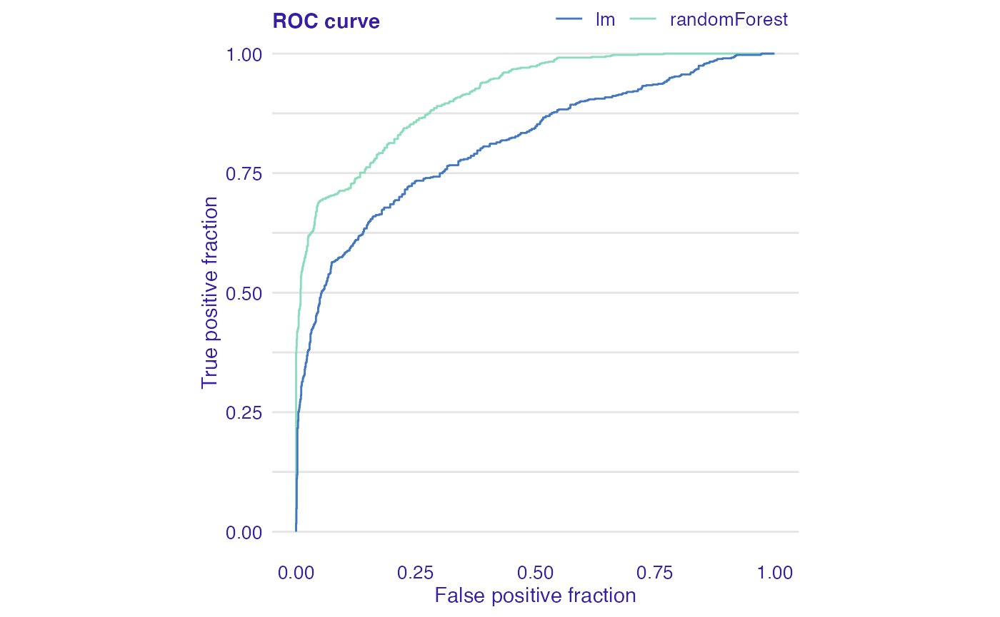
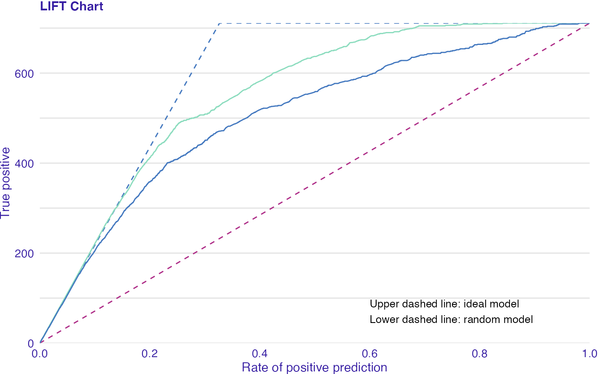

vignettes/model_evaluation_audit.Rmd
model_evaluation_audit.RmdIn this vignette we present plots for evaluation of classification models.
We work on titanic_imputed dataset form the DALEX package.
## gender age class embarked fare sibsp parch survived
## 1 male 42 3rd Southampton 7.11 0 0 0
## 2 male 13 3rd Southampton 20.05 0 2 0
## 3 male 16 3rd Southampton 20.05 1 1 0
## 4 female 39 3rd Southampton 20.05 1 1 1
## 5 female 16 3rd Southampton 7.13 0 0 1
## 6 male 25 3rd Southampton 7.13 0 0 1We fit 2 models: glm and randomForest.
model_glm <- glm(survived ~ ., data = titanic_imputed, family = "binomial") library(randomForest) model_rf <- randomForest(survived ~ ., data = titanic_imputed)
The first step is creating an object that can be used to audit a model. It wraps up a model with meta-data. An alternative way is to use explain function from the package DALEX.
library(auditor) exp_glm <- audit(model_glm, data = titanic_imputed, y = titanic_imputed$survived) exp_rf <- audit(model_rf, data = titanic_imputed, y = titanic_imputed$survived)
Second step is creating auditor_model_evaluation object that can be further used for validating a model.
eva_glm <- model_evaluation(exp_glm) eva_rf <- model_evaluation(exp_rf)
Receiver operating characteristic (ROC) curve is a tool for visualising a classifier’s performance. It answers the question of how well the model discriminates between the two classes. The boundary between classes is determined by a threshold value. ROC illustrates the performance of a classification model at various threshold settings.
The diagonal line y = x corresponds to a classifier that randomly guess the positive class half the time. Any model that appears in the lower right part of plot performs worse than random guessing. The closer the curve is to the the left border and top border of plot, the more accurate the classifier is.
plot(eva_glm, eva_rf, type = "roc")

# or # plot_roc(eva_glm, eva_rf)
The LIFT chart is a rate of positive prediction (RPP) plotted against true positive (TP) on a threshold t.
The chart illustrates varying performance of the model for different thresholds. A random and ideal models are represented by dashed curves (lower and upper respectively). The closer the LIFT curve gets to the upper dashed curve (ideal model), the better a model is.
plot(eva_glm, eva_rf, type = "lift")

# or # plot_lift(eva_glm, eva_rf)